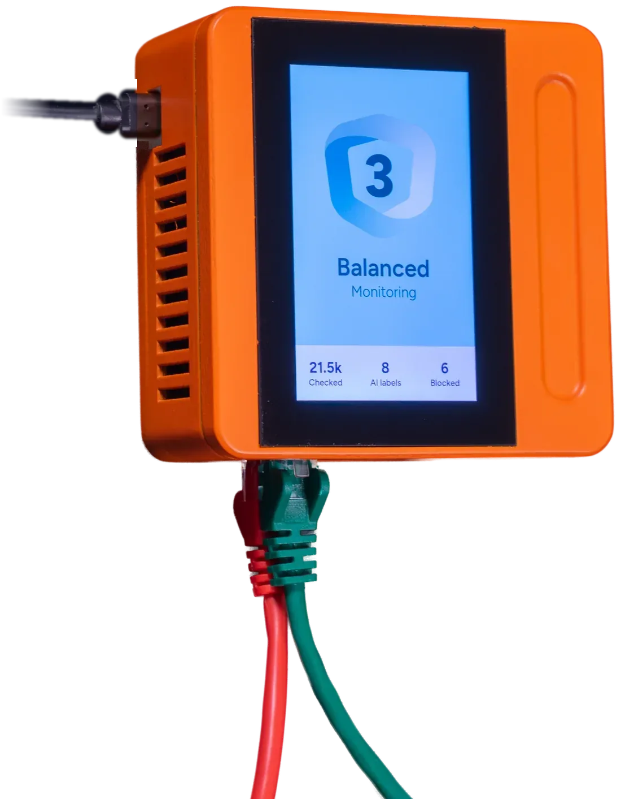

Freehold
Vos données restent là où elles sont. La question vient à elles, et seule la réponse repart.
L'idée
Tout ce qu'internet vous envoie arrive tel quel. Tout ce que vous dites de vous à une entreprise est perdu dès l'instant où vous l'envoyez.
Freehold renverse les deux, avec un Hub à votre porte qui travaille pour vous.
Ce qui entre
Ce qui entre est vérifié à votre porte, selon vos règles, pour que les bonnes choses vous parviennent en premier.
Ce qui sort
Une entreprise envoie sa question à votre Hub. Votre Hub calcule la réponse chez vous et ne renvoie que cette réponse.
Le pli cacheté
Chaque réponse porte une étiquette signée : qui l'a calculée, qui peut la lire, à quoi elle peut servir, et quand elle ne vaut plus.
Le curseur
C'est vous qui réglez le curseur dans les deux directions. La position « éteint » est permise, et elle le restera.

Le nom
Vous partagez la récolte et gardez le champ.
Un freehold, c'est une terre que l'on possède en pleine propriété, sans rien devoir à personne. Vous partagez ce qu'elle produit. La terre reste à vous.
Le monde n'est pas ainsi aujourd'hui. Mais c'est ainsi qu'il devrait être, et si cela ne tient qu'à nous, c'est ainsi qu'il sera.
Des questions, ou envie d'en parler : hello@freehold.works